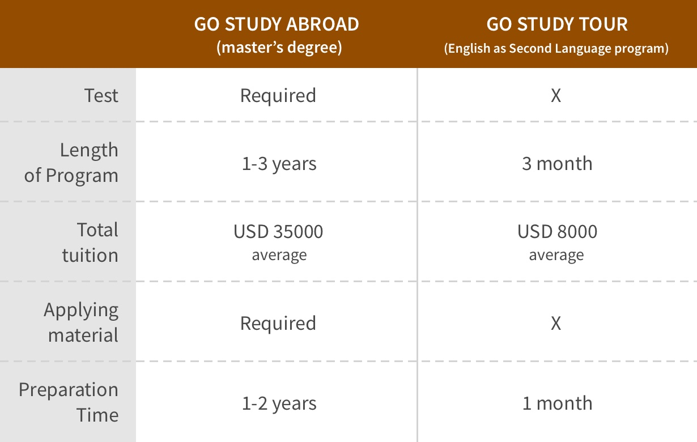
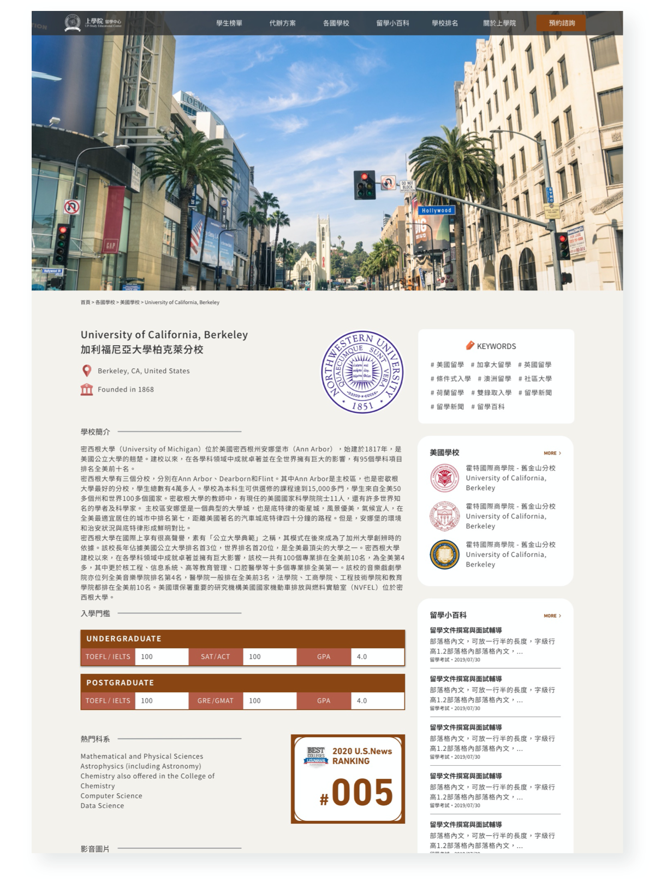
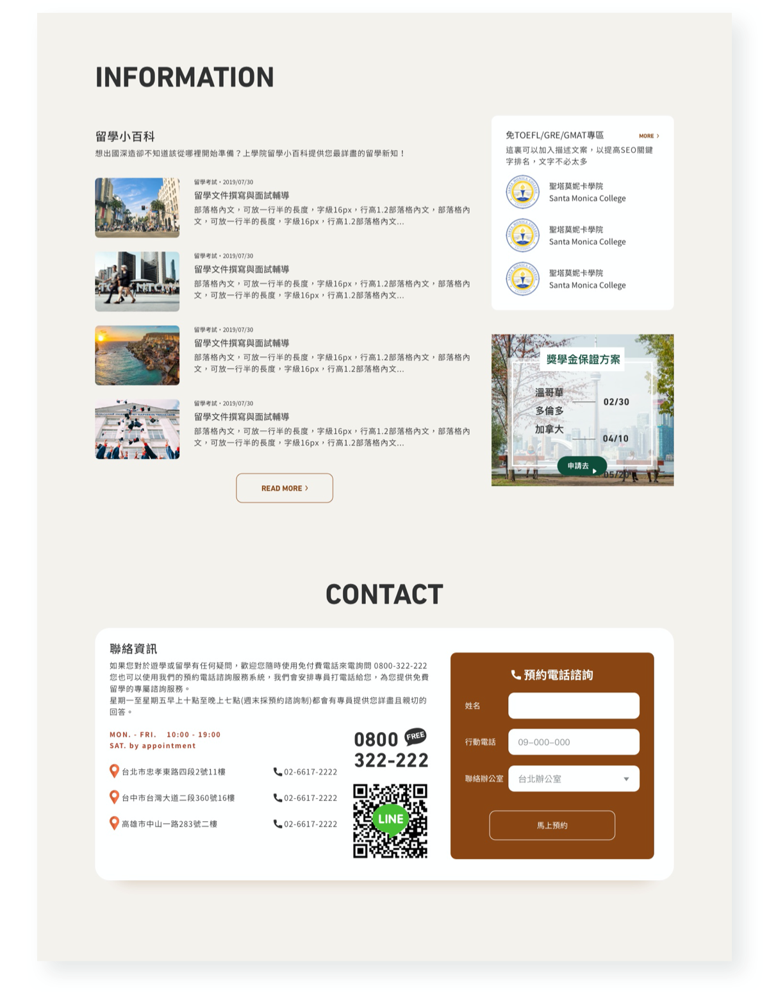

Up Study Website
Project type:
RWD Website
Duration:
2019-2020
Role:
Product Manager & Designer
Methods:
Competitive product analysis / UX interview / User journey / User Story
/ User Flow / Lo-fi Prototyping / Card Sorting
Up-study is an education consulting company that provides expert opinions, analysis, and
recommendations to people for applying overseas education. In 2019, under the impact of a pandemic,
people avoid taking a risk of infection to study abroad. The number of customers had decreased
significantly. With the view to solving the dilemma and attracting as many customers as before,
Up-study spent a lot of budget on digital advertising. However, result in a less than satisfactory.
Sometimes when you innovate, you make mistakes.
It is best to admit them quickly, and get on with improving your other innovations
- Steve Jobs
It is best to admit them quickly, and get on with improving your other innovations
- Steve Jobs
After a meeting with the CEO and department managers, we decided to
move the business from a traditional one to a digital one. Optimizing the Up Study website was a
part of the digital transformation. The project aims to motivate online users to make a consulting
service appointment on the website. We expect to make online users become offline customers by
improving user experience on the site.
LEAD
Marketing and engineering team
95%
Stakeholder satisfaction
40%
increase in leads
60%
Budget saved
25%
Session duration increased
66%
Bounce rate reduced
In this digital transformation plan, software engineers play an
important role to build the site but we did not have an engineer in the company. After a meeting
with the CEO, we decide to use outsourcing to cut labor costs and recruit our own IT team for the
next project simultaneously. As a product manager in the team, I had interviewed potential engineer
candidates and worked closely with a third-party IT company in the project.
Communication
Because the third-party company did not involve in the business core, I need to set up project goals
and ensure every team member can understand ins and outs and requirements clearly.
Project tracking
Once, the third-party company delays our project because they dealing with other projects at the
same time. It is important to trace the project schedule regularly. Therefore, we decided to have a
meeting once a week to ensure the project can deliver on time.

In order to identify the current demand for our product to design appropriate
strategies to outshine opponents, a competitive product analysis was conducted. According to the
analysis result, most consulting centers offer two services: Study Tour and Study Abroad.
According to the analysis result, most consulting centers aim to attract customers who need to have
Study Tour consulting services and Study Abroad consulting services. However, we notice that the
customer types of those two services are different. The characteristics and attitudes of Study
Abroad applicants include:
Compared with the Study Tour track, study abroad applicants need to take
a language ability test, prepare application materials, explore schools...etc. They usually take a
long time and effort to make an elaborate plan for applying for a higher or additional education
degree.
Most study abroad applicants search for related information on social
media, Wikipedia, School official websites.
Most study abroad applicants consider it will increase purchasing
intention to consulting service if a consultant had the experience to apply to the school.

From a result of the user journey, we identify that:
- Study Abroad applicants think they spend too much effort and time to prepare the application work.
- Study Abroad applicants are unsatisfied when they cannot gather needed information on a site.
- Study Abroad applicants feel inconvenienced if contact information is not clear.
- Study Abroad applicants expect a consulting center website can provide service price and detail.
#########
Optimize Information Architecture
I designed some pages to have a sidebar on the left. It helped users to
navigate the site more efficiently and allowed users to further interact with the site. The content
area takes up to 70% of the design; therefore, people would not be distracted by other elements.
This caused fewer conversions.


#########
Easy to contact to
At the bottom of every page, I designed content with a contact form. Users can
easily book a consulting service on the site. According to the data, after users read school
profiles on the site, they filled in their contact information in the form. Some people came to the
Up-study consulting center after they visited the site and trusted us more as a result of the
website. The page for overseas school profile. The sidebar provides users relevant information about
the school on other pages.